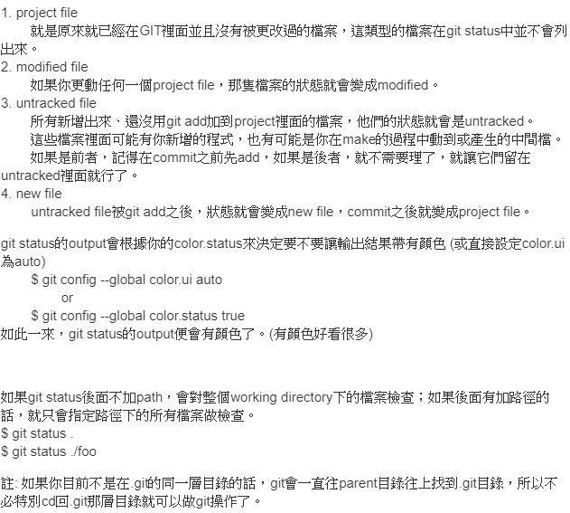
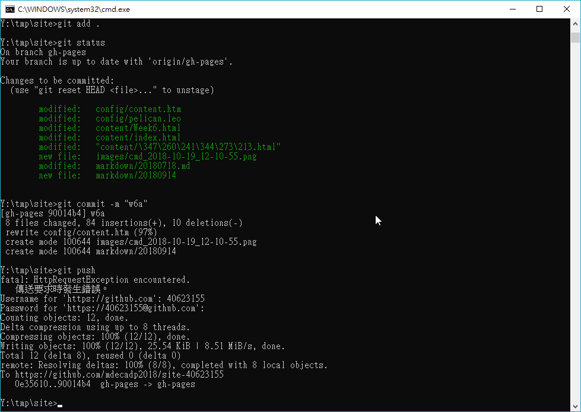
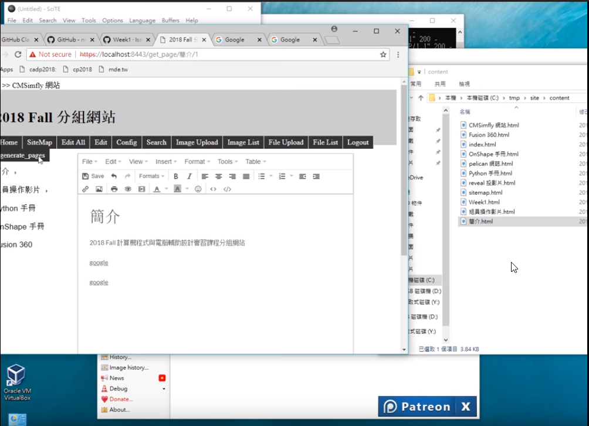

01.先編輯完內頁網誌後，今日所遇到的困難是，在編輯後以為自己已經推上去了，結果檢查近端跟遠端觀看發現兩版本不一。此時利用"git add ."推上，但我做這動作時忘記把近端先關閉，(這邊利用ctr+c關閉近端)，之後利用"git add ."來推上，後使用"git ststus"檢查近端是否有未更新的，這邊我有找到一個還蠻詳細介紹這指令的網站:https://blog.xuite.net/yctseng/notes/37208602-git-status 來分享。以下為網站截圖:

02.在重複推同一天檔案時要注意commit -"name"部分，即便同一禮拜的東西，盡量使用不同的名字，例:w1接續w1-a等等之類的，避免檔案覆蓋錯誤的問題。

03.最後不忘要上github去檢查是否有推上雲端。
04.學會如何崁入超連結(使用insert/edit link)
05.了解資料夾content內檔案對應的內容

-------------------------------------------------------------------------------------------------------------